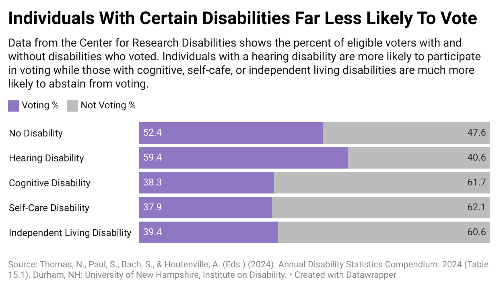

Voter Turn Out By Disability
Here we can observe the voting trends by disability type including hearing, cognitive, self-care, and independent living disabilities.
Only half of the eligible No Disability group participated in voting (roughly 52%). Interestingly, the group with the Hearing Disability group had the highest voter turnout at approximately 59%. The cognitive, self-care, and independent living disability groups each share a much lower voter turnout averaging roughly 38-39%. This discrepancy indicates that these groups in particular face significant barriers when trying to vote. Lack of access to voting options such as mail-in ballots prove to be a major challenge for these groups in particular. Inadequate polling locations are frequent, often not accommodating for mobility challenges.